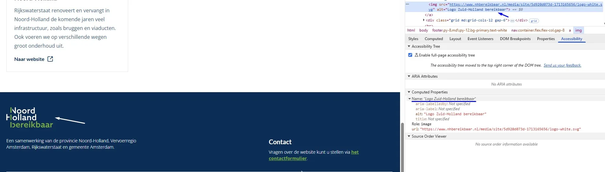
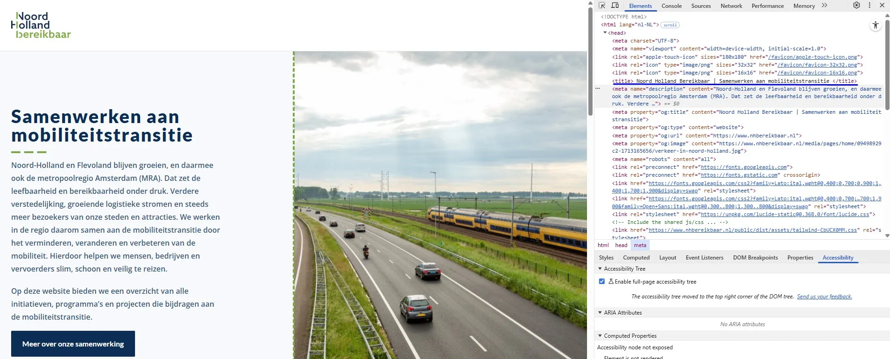
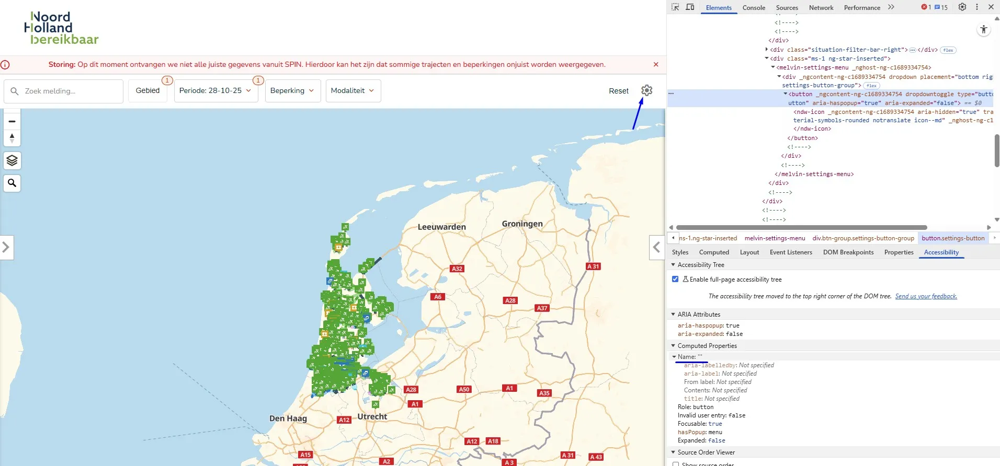
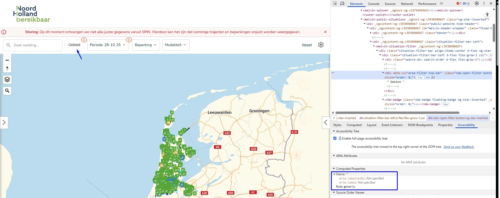
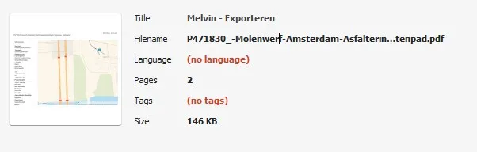
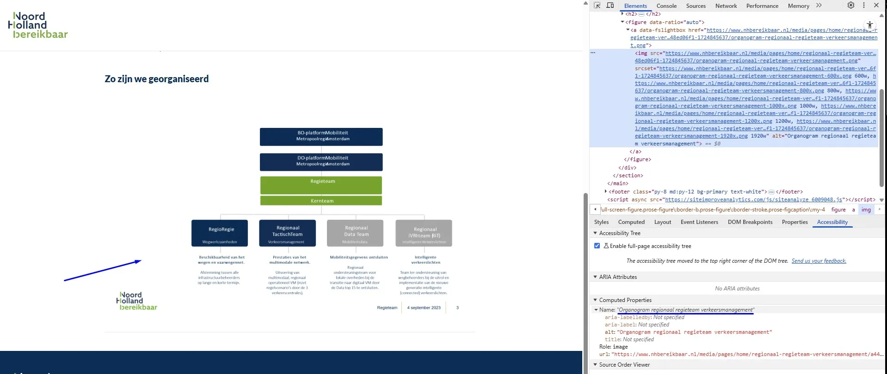

Audit digitale toegankelijkheid van website nhbereikbaar.nl
Samenvatting
Wij hebben de website nhbereikbaar.nl onderzocht tussen 28 en 31 oktober 2025. Op dit moment zijn 43 van de 55 succescriteria als voldoende beoordeeld. In dit rapport lees je wat er bij de overige 12 nog fout gaat, en hoe je dat kunt verbeteren.
Op een klein scherm mist de menuknop bovenaan de juiste toegankelijke rol. Hierdoor kan hulpsoftware deze niet herkennen als een knop. Deze knop is niet met het toetsenbord te bedienen.
De juiste rol voor de menuknop zou `button` (knop) moeten zijn, omdat je er een actie mee uitvoert: het openen of sluiten van het menu. Als de knop niet de juiste rol heeft, kan een schermlezer of ander hulpmiddel de knop niet goed herkennen, waardoor deze moeilijker te gebruiken is voor mensen die deze hulptechnologie gebruiken.
#### Oplossing:
Zorg dat de menuknop de juiste rol krijgt, door het `button`-element ervoor te gebruiken, of `role="button"` toe te voegen.
### Toetsenbordfocus komt niet in het mobiele menu terecht
Impact: GrootType: TechniekWCAG: 2.4.3EN: 9.2.4.3
Wanneer de pagina wordt ingezoomd, verschijnt er een menuknop in de header die het mobiele menu opent. De toetsenbordfocus komt echter niet in het mobiele menu terecht.
Oplossing:
Bij dit soort menu’s moet de toetsenbordfocus goed worden ingesteld. De focus moet in het mobiele menu terechtkomen. Zolang het menu geopend is, moet de focus in het menu blijven en niet op de onderliggende pagina terechtkomen.
#2 - Tekstalternatief van het logo is niet voldoende
Impact: GrootType: ContentWCAG: 1.1.1EN: 9.1.1.1

Het logo onderaan de website toont de volledige tekst “Noord-Holland Bereikbaar”, maar de alt-tekst luidt “Logo Zuid-Holland bereikbaar”.
In het tekstalternatief staat dus niet alle tekst die in het logo te zien is. Dit moet wel. Zo weten bezoekers die het plaatje niet kunnen zien, ook precies wat er staat.
#### Oplossing:
Verander de `alt`-tekst zodat de volledige tekst van het logo erin staat: “Logo Noord-Holland Bereikbaar”.
### Relatie tussen elementen in een groep is niet in de code vastgelegd
Onderaan de pagina lijkt een groep elementen, zoals de links “Privacy & Cookies” en “Toegankelijkheid”, visueel bij elkaar te horen. Deze relatie wordt echter niet weerspiegeld in de HTML-structuur.
Als het voor een ziende bezoeker duidelijk is dat een groep links of teksten bij elkaar hoort, dan moet die structuur ook in de HTML-code aanwezig zijn.
Oplossing:
Neem de elementen bijvoorbeeld op in een ul- of ol-element of voeg een kop boven deze tekst toe.
#3 - Elementen die toetsenbordfocus krijgen staan onder sticky header
Impact: GrootType: TechniekWCAG: 2.4.11
Op alle pagina’s bedekt een sticky header bij het verkleinen van de website naar een lagere resolutie een deel van de pagina. Hoewel interactieve elementen, zoals de link “het contactformulier”, nog steeds toetsenbordfocus ontvangen, wordt de focusindicator verborgen achter de sticky header. Hierdoor kunnen bezoekers die met het toetsenbord navigeren niet zien waar de toetsenbordfocus zich bevindt.
Oplossing:
Zorg ervoor dat de sticky header of footer geen interactieve elementen of hun focusindicatoren bedekt. Je moet hiervoor bijvoorbeeld de z-index aanpassen, elementen herpositioneren of de header/footer dynamisch verkleinen op kleinere schermen.
#4 - Het scheidingsteken tussen de items in het kruimelpad wordt voorgelezen door schermlezers
Impact: KleinType: TechniekWCAG: 1.1.1EN: 9.1.1.1
Op bijna alle pagina’s met een kruimelpad worden in de kruimelnavigatie decoratieve symbolen gebruikt als scheidingstekens tussen links. Deze symbolen zijn echter niet verborgen voor schermlezers, waardoor ze worden voorgelezen. De schermlezer zegt bijvoorbeeld: “Home, schuine streep, Toegankelijkheid”.
Zie ook de pagina’s:
Zorg dat het scheidingsteken verborgen is voor schermlezers. Dit kun je oplossen met het attribuut
aria-hidden=”true”: voeg het attribuut aria-hidden=”true” toe aan het span-element dat dit symbool bevat.
#5 - Kleurcontrast van tekst is te laag (tekst kleiner dan 19px)
Op bijna alle pagina’s, zoals https://www.nhbereikbaar.nl/toegankelijkheid, staat groene tekst “Home” (`#77a942`) op een witte achtergrond. De kleurcontrastverhouding is te laag: 2,8:1.
Ditzelfde probleem komt ook voor op de volgende pagina’s:
Deze tekst is kleiner dan 19px, daarom moet het contrast met de achtergrondkleur minimaal 4,5:1 zijn. Op deze pagina staat een instructie die uitlegt hoe je kleurcontrast kan testen: https://properaccess.nl/hoe-test-ik-kleurcontrast/.
#6 - Meerdere pagina’s hebben dezelfde title-tekst
Impact: MediumType: ContentWCAG: 2.4.2EN: 9.2.4.2

De pagina’s https://www.nhbereikbaar.nl/ en https://www.nhbereikbaar.nl/samenwerken-aan-de-mobiliteitstransitie hebben bijna identieke tekst in het title-element van de pagina: respectievelijk “Noord Holland Bereikbaar | Samenwerken aan mobiliteitstransitie” en “Noord Holland Bereikbaar | Samenwerken aan de mobiliteitstransitie”.
Dit is niet de bedoeling. In het `title`-element van elke pagina moet een unieke tekst staan die de inhoud van de pagina beschrijft, bij voorkeur gevolgd door de naam van de organisatie. Staat hier bij twee of meer pagina’s dezelfde tekst? Dan kan dit verwarrend zijn voor de bezoeker. De navigatie tussen pagina’s wordt dan ook lastiger.
#### Oplossing:
Verander de tekst in het `title`-element van, zodat deze op elke pagina uniek is en de inhoud van de pagina nauwkeurig beschrijft.
### Onzichtbaar element krijgt toetsenbordfocus
Impact: GrootType: TechniekWCAG: 2.4.3EN: 9.2.4.3
Op deze pagina komt de toetsenbordfocus terecht op een onzichtbaar interactief element na de knop “Meer over onze samenwerking”.
De toetsenbordfocus mag niet terechtkomen op onzichtbare interactieve elementen (links, knoppen, formuliervelden). Als dat wel gebeurt, kan een bezoeker ze onbedoeld activeren.
Oplossing:
Zorg dat alleen elementen die zichtbaar zijn toetsenbordfocus kunnen krijgen en dat de focusvolgorde logisch is.
#7 - Link heeft geen correcte toegankelijke rol en is niet te bedienen met het toetsenbord
Op deze pagina, onder “Overzicht initiatieven, programma’s en projecten”, hebben de links met de tekst “Regionaal Regieteam Verkeersmanagement”, “RegioRegie”, “Actueel overzicht wegwerkzaamheden” en andere niet de juiste toegankelijke rol. Deze links zijn klikbaar gemaakt met Javascript (onclick), maar deze oplossing is niet toegankelijk voor hulpsoftware en werkt niet met het toetsenbord.
Elk HTML-element heeft standaard een bepaalde rol. Dit betekent dat het element bepaalde eigenschappen en functies heeft om informatie aan de bezoeker te geven of om informatie van de bezoeker te ontvangen. De rol bepaalt dus wat het element doet. Schermlezers en andere hulpmiddelen moeten de correcte rol van elk element op een webpagina kennen. Zo kunnen ze op een slimme manier met het element omgaan en aan de bezoeker uitleggen wat het element doet.
Oplossing:
Zorg dat de link de juiste rol heeft door een van de onderstaande oplossingen toe te passen:
Het a-element gebruiken: als dit nog niet zo is, gebruik dan het a-element om de link te maken. Dit element heeft standaard al de rol van link.
role=”link” toevoegen: als er een ander element voor de link is gebruikt (meestal niet aan te raden), voeg dan het attribuut role=”link” toe om de rol van dit element expliciet te definiëren.
#8 - Kleurcontrast van tekst is niet voldoende bij toetsenbordfocus en/of als de muiscursor erover beweegt
Op deze pagina verandert de tekst “Meer informatie” of “Naar website” wanneer het element wordt aangewezen met de muis. De kleurcontrastverhouding van deze tekst is 2,8:1.
Tekst van informatieve elementen zoals links en knoppen moet altijd voldoende contrast hebben, ook als het element toetsenbord focus krijgt of als de bezoeker met de muiscursor over het element beweegt (hover).
#### Oplossing:
Zorg dat de tekst ook als de muis eroverheen gaat minimaal een contrast van 4,5:1 heeft met de achtergrond. Op deze pagina staat een instructie die uitlegt hoe je kleurcontrast kan testen: [https://properaccess.nl/hoe-test-ik-kleurcontrast/](https://properaccess.nl/hoe-test-ik-kleurcontrast/).
Op deze pagina staat rode tekst “Storing: Op dit moment ontvangen …” (#eb0000) op een lichtrode achtergrond (#fff5f5). De kleurcontrastverhouding is te laag: 4,4:1. Op hover wordt het contrast slechter.
Hetzelfde probleem doet zich voor bij de cijfers naast de tekst “Gebied” en “Periode: 20-10-25”. Daar staat een rood cijfer “1” (#CE4314) op een lichtrode achtergrond (#FDEEE6), met een te lage kleurcontrastverhouding van 4,2:1.
Oplossing:
Deze tekst is kleiner dan 24px en niet vetgedrukt, daarom moet het contrast minimaal 4,5:1 zijn. Op deze pagina staat een instructie die uitlegt hoe je kleurcontrast kan testen: https://properaccess.nl/hoe-test-ik-kleurcontrast/.
#11 - Knop heeft geen toegankelijke naam
Impact: GrootType: TechniekWCAG: 4.1.2EN: 9.4.1.2

Op deze pagina heeft de knop met het tandwielpictogram geen toegankelijke naam. Hierdoor begrijpen bezoekers die een schermlezer gebruiken niet wat de functie of bestemming van de knop is.
Ditzelfde probleem doet zich voor na het aanklikken van de tekst “Storing: …”, waar ook knoppen aanwezig zijn zonder toegankelijke naam.
#### Oplossing:
Geef deze knoppen een toegankelijke naam, bijvoorbeeld door beschrijvende knoptekst te gebruiken, een aria-label toe te voegen of een andere geschikte techniek toe te passen.
### Knop bestaat alleen uit afbeelding, maar er is geen alternatieve tekst
Impact: GrootType: TechniekWCAG: 1.1.1EN: 9.1.1.1
Op deze pagina heeft de knop met het tandwielpictogram geen tekstalternatief. Wanneer een knop uitsluitend uit een afbeelding bestaat, moet de alternatieve tekst van die afbeelding de functie van de knop beschrijven.
Zie ook de knop met een X, die verschijnt wanneer je gegevens toevoegt aan het invoerveld “Search”.
Ditzelfde probleem doet zich voor op deze pagina na het aanklikken van de tekst “Storing: …”, bij de knoppen met een uitroepteken in een vierkant, een i in een cirkel, een bel en andere pictogrammen.
Oplossing:
Voeg de beschrijving toe via een alt-tekst bij het img-element of een title-element bij een svg , een aria-label of een tekst die visueel verborgen is, maar toegankelijk voor de schermlezer.
#12 - Dialoogvenster heeft niet de juiste rol en geen toegankelijke naam
Impact: GrootType: TechniekWCAG: 4.1.2EN: 9.4.1.2
Op deze pagina opent, na het aanklikken van de tekst “Storing: …”, de knop met een uitroepteken in een vierkant een dialoogvenster. Dit dialoogvenster mist zowel een correcte ARIA-rol als een toegankelijke naam.
Schermlezers kunnen hierdoor niet doorgeven dat het om een dialoogvenster gaat, en wat de inhoud ervan is.
Oplossing:
Voeg twee attributen toe aan het dialoogvenster: een aria-label met een duidelijke beschrijving van de inhoud (aria-label="Beschrijving van de inhoud") en role="dialog".
#13 - Knop heeft niet de juiste toegankelijke rol
Impact: GrootType: TechniekWCAG: 4.1.2EN: 9.4.1.2
Op deze pagina heeft, nadat je op de tekst “Storing: …” hebt geklikt en vervolgens op de knop met het uitroepteken in een vierkant, de knop “x” niet de juiste toegankelijke rol.
Elk HTML-element heeft standaard een rol. Dit betekent dat het element bepaalde eigenschappen en functies heeft om informatie aan de bezoeker te geven of om informatie van de bezoeker te ontvangen. De rol bepaalt dus wat het element doet. Schermlezers en andere hulpmiddelen moeten de correcte rol van elk element op een webpagina kennen. Zo kunnen ze op een slimme manier met het element omgaan en aan de bezoeker uitleggen wat het element doet.
Oplossing:
Zorg dat de knop de juiste toegankelijke rol heeft. Gebruik het button-element.
#14 - Aangepaste focusindicator heeft onvoldoende kleurcontrast
Op deze pagina wordt, na het aanklikken van de tekst “Storing: …”, een aangepaste toetsenbordfocusindicator gebruikt op de knoppen “Terug” en “Help”. Deze is zichtbaar als een grijze rand (#E4E4E4) op een lichtgrijze achtergrond (#F5F5F5). De kleurcontrastverhouding tussen deze kleuren is 1,2:1.
Op de site wordt niet de standaard focusindicator gebruikt, maar een aangepaste versie met een (gekleurde) rand. Die aanpassing is met CSS toegevoegd. Voor de standaard focusindicator zijn geen contrasteisen in WCAG; die wordt dus altijd goedgekeurd voor dit succescriterium. Bezoekers kunnen een standaard focusindicator namelijk zelf aanpassen, naar hun eigen wensen. Maar dat kan niet meer als de focusindicator met CSS is aangepast. Daarom gelden de contrasteisen in dat geval wél.
Oplossing:
Zorg dat het contrast van de aangepaste focusindicator minimaal 3,0:1 is.
#15 - Er staan twee koppen van hetzelfde niveau direct onder elkaar
Impact: MediumType: ContentWCAG: 1.3.1EN: 9.1.3.1
Op deze pagina volgt, na het aanklikken van de tekst “Storing: …”, een kop van niveau 4 direct op een kop van een hoger niveau. Zie de koppen “Updates” en “Storing”.
Als twee koppen van hetzelfde niveau direct onder elkaar staan zonder inhoud ertussen, dan is één van de koppen niet op de goede manier gebruikt. Direct onder het eerste h3-element mag een h4-element komen of andere content, maar niet nog een keer een h3-element of een h2-element.
#16 - Bezoekers die inzoomen tot 200% kunnen niet meer alle functies gebruiken
Impact: GrootType: TechniekWCAG: 1.4.4EN: 9.1.4.4
Wanneer de tekst op deze pagina tot 200% wordt ingezoomd, zijn het invoerveld “Zoek meldingen”, de knop “Gebied”, de knop “Periode: 21-10-25” en andere elementen niet zichtbaar en niet bedienbaar.
Oplossing:
Zorg dat alles nog werkt als een bezoeker inzoomt tot 200% op een scherm van 1280 bij 1024 pixels.
#17 - De rand van het zoekveld heeft een te laag contrast
De zoekbalk in het hoofdmenu heeft onvoldoende kleurcontrast tussen de rand en de achtergrond. De grijze rand (#CFD2D3) op de witte achtergrond heeft een kleurcontrastverhouding van 1,5:1. Dit is te laag, het moet minimaal 3,0:1 zijn.
Oplossing:
Zorg dat het contrast tussen de rand van de zoekbalk en de achtergrond minimaal 3,0:1 is.
#18 - Knop heeft niet de juiste toegankelijke rol
Impact: GrootType: TechniekWCAG: 4.1.2EN: 9.4.1.2

Op deze pagina heeft de knop met het label “Gebied” niet de juiste toegankelijke rol.
Elk HTML-element heeft standaard een rol. Dit betekent dat het element bepaalde eigenschappen en functies heeft om informatie aan de bezoeker te geven of om informatie van de bezoeker te ontvangen. De rol bepaalt dus wat het element doet. Schermlezers en andere hulpmiddelen moeten de correcte rol van elk element op een webpagina kennen. Zo kunnen ze op een slimme manier met het element omgaan en aan de bezoeker uitleggen wat het element doet.
#### Oplossing:
Zorg dat de knop de juiste toegankelijke rol heeft. Gebruik het `button`-element.
### Toetsenbordfocus gaat buiten het instellingenmenu terwijl het menu open blijft staan
Impact: GrootType: TechniekWCAG: 2.4.3EN: 9.2.4.3
Wanneer een bezoeker de instellingenknop (met het tandwielpictogram) activeert, opent er een instellingenmenu. Toetsenbordgebruikers kunnen de focus echter buiten dit menu verplaatsen terwijl het nog geopend is. De focus gaat door naar onderliggende paginacontent, ook al is het instellingenpaneel nog zichtbaar.
Dit zorgt voor verwarring bij gebruikers die afhankelijk zijn van toetsenbordnavigatie, omdat het onduidelijk wordt welk interface-element actief is en of het menu nog geopend is.
Oplossing:
Bij dit soort menu’s moet je de toetsenbordfocus goed instellen. Als het instellingenmenu actief is, moet de focus binnen het menu blijven, en mag deze niet op de onderliggende pagina terechtkomen.
Dit kun je op een van de volgende manieren oplossen:
Hou de focus binnen het instellingenmenu totdat de bezoeker op de sluitknop heeft geklikt of op de ESC-toets heeft gedrukt.
Sluit het menu automatisch op het moment dat de toetsenbordfocus eruit gaat.
PDF P471830_-Molenwerf-Amsterdam-Asfalteringswerkzaamheden-Velserweg-Brettenpad.pdf
Link naar pagina: https://www.nhbereikbaar.nl/melvin
#19 - De taal is niet ingesteld in de metadata
Impact: MediumType: ContentWCAG: 3.1.1EN: 9.3.1.1

In de metagegevens van deze pdf is de taal niet ingesteld.
Het is belangrijk om de taal in te stellen. Dan kan hulpsoftware de informatie uit het bestand met de juiste uitspraakregels voorlezen.
#### Los het op in Adobe Acrobat:
Open het pdf-document in Adobe Acrobat.
Ga naar Bestand > Eigenschappen.
Ga naar het tabblad Geavanceerd.
Selecteer in het veld Taal de juiste taal voor het document, bijvoorbeeld Nederlands (Dutch).
Klik op OK en sla het bestand op.
#20 - Structuur van pdf-document is niet in codes vastgelegd
Impact: MediumType: ContentWCAG: 1.3.1EN: 9.1.3.1
Dit pdf-document bevat geen codes, waardoor de inhoud niet toegankelijk is voor schermlezers.
Bovendien kunnen wij de pdf hierdoor niet volledig onderzoeken. Het gaat om alle succescriteria die met de pdf-codelaag te maken hebben, zoals semantische koppen en alternatieve teksten bij afbeeldingen. Als je dit oplost, is het dus mogelijk dat er nieuwe toegankelijkheidsproblemen ontstaan die nu nog niet aan het licht zijn gekomen.
#### Oplossing:
Voeg codes toe aan het document die de structuur van het document weergeven.
In de metadata van deze pdf is de taal niet ingesteld.
Het is belangrijk om de taal in te stellen. Dan kan hulpsoftware de informatie uit het bestand met de juiste uitspraakregels voorlezen.
#### Los het op in Adobe Acrobat:
Open het pdf-document in Adobe Acrobat.
Ga naar Bestand > Eigenschappen.
Ga naar het tabblad Geavanceerd.
Selecteer in het veld Taal de juiste taal voor het document, bijvoorbeeld Nederlands (Dutch).
Klik op OK en sla het bestand op.
#22 - Structuur van pdf-document is niet in codes vastgelegd
Impact: MediumType: ContentWCAG: 1.3.1EN: 9.1.3.1
Dit pdf-document bevat geen codes, waardoor de inhoud niet toegankelijk is voor schermlezers.
Bovendien kunnen wij de pdf hierdoor niet volledig onderzoeken. Het gaat om alle succescriteria die met de pdf-codelaag te maken hebben, zoals semantische koppen en alternatieve teksten bij afbeeldingen. Als je dit oplost, is het dus mogelijk dat er nieuwe toegankelijkheidsproblemen ontstaan die nu nog niet aan het licht zijn gekomen.
#### Oplossing:
Voeg codes toe aan het document die de structuur van het document weergeven.
Op deze pagina staan de koppen “Cookies en privacy beleid”, “Verzamelen van gegevens”, “Tracking & cookies” en “Verwijderen van gegevens”. In deze koppen worden zowel het heading-element als het strong-element gebruikt.
Het strong-element heeft een semantische waarde. Het geeft een bepaalde betekenis aan de tekst die erin staat, namelijk dat de tekst extra nadruk moet krijgen. Om die reden mag je dit element niet gebruiken om alleen een visueel effect te bereiken (vetgedrukt).
Een vergelijkbaar probleem doet zich voor op de pagina https://www.nhbereikbaar.nl/samenwerken-aan-de-mobiliteitstransitie, waar de koppen “De vier Mobiliteitsopgaven”, “Regionale samenwerking” en “Overzichtswebsite en contact” staan.
Zie ook https://www.nhbereikbaar.nl/regionaal-regieteam-verkeersmanagement, waar de kop “Zo zijn we georganiseerd” is verborgen, en https://www.nhbereikbaar.nl/regioregie, waar de kop “Actueel Overzicht tijdelijke verkeersmaatregelen (Melvin)” voorkomt.
Oplossing:
Gebruik CSS om de tekst vetgedrukt te maken, en verwijder het strong-element.
#23 - Beschrijving van complexe afbeelding ontbreekt
Impact: GrootType: ContentWCAG: 1.1.1EN: 9.1.1.1

Op deze pagina staat, in de sectie onder “Zo zijn we georganiseerd”, een complexe afbeelding met als tekstalternatief “Organogram regionaal regieteam verkeersmanagement”.
Complexe afbeeldingen zoals infographics en schema’s bevatten veel informatie die niet binnen de 150 karakters van de alternatieve tekst past. Die informatie maak je toegankelijk door twee tekstalternatieven te bieden: een korte en een lange beschrijving.
#### Oplossing:
De korte beschrijving, meestal de alternatieve tekst, moet de *locatie* van de lange beschrijving aangeven. De lange beschrijving kun je als tekst op de pagina zelf plaatsen, maar deze mag ook op een andere pagina of in een downloadbaar bestand staan.
### Tekst is als afbeelding geplaatst
Impact: ContentType: MediumWCAG: 1.4.5EN: 9.1.4.5
Op deze pagina staat, onder “Zo zijn we georganiseerd”, een afbeelding die ingebedde tekst bevat.
Als je een tekst als afbeelding plaatst, kunnen veel bezoekers er niets meer mee. Dit komt doordat ze de tekst in de afbeelding niet kunnen vergroten of aanpassen.
Oplossing:
Het is beter om deze tekst gewoon als normale tekst op de pagina te plaatsen. Op die manier kunnen mensen de grootte, kleur of het lettertype aanpassen zodat het voor hen leesbaarder wordt. Als de tekst in de afbeelding zit gebakken, kunnen ze dit niet doen.
#24 - Contrast van tekst in afbeelding is te laag
Impact: ContentType: MediumWCAG: 1.4.3EN: 9.1.4.3
Op deze pagina staat, onder “Zo zijn we georganiseerd”, een afbeelding met ingebedde tekst. De witte tekst op de groene achtergrond (#76A32E) heeft een kleurcontrastverhouding van 2,9:1.
Zie ook de witte tekst op de grijze achtergrond (#A6A6A6); de kleurcontrastverhouding daarvan is te laag: 2,4:1.
Oplossing:
Deze tekst is groter dan 19px maar kleiner dan 24px en vetgedrukt, daarom moet het contrast minimaal 3,0:1 zijn. Op deze pagina staat een instructie die uitlegt hoe je kleurcontrast kunt testen: https://properaccess.nl/hoe-test-ik-kleurcontrast/.
#25 - Bij 400% zoom is een horizontale scrollbar aanwezig
Wanneer deze pagina wordt bekeken met een schermresolutie van 1280 bij 1024 pixels en wordt ingezoomd tot 400%, verschijnt er een schuifbalk.
Horizontaal scrollen is niet toegestaan, ook niet als de viewport is ingesteld of ingezoomd op 320 CSS-pixels breed (voor verticale inhoud) of 256 CSS-pixels hoog (voor horizontale inhoud). Zorg ervoor dat de tekst binnen het scherm past. Alleen als scrollen in beide richtingen echt nodig is voor de betekenis of het gebruik van de inhoud mag het wel. Uitzonderingen zijn tabellen, betekenisvolle afbeeldingen en kaarten. Deze moeten leesbaar blijven, dus binnen deze elementen mag je wel scrollen.
Oplossing:
Controleer of het horizontaal scrollen nodig is. Als dit niet zo is, zorg dan dat horizontaal scrollen niet mogelijk is bij inzoomen.
Op deze pagina wordt onder de kop “Samenwerken aan de mobiliteitstransitie” het strong-element onjuist gebruikt voor opmaakdoeleinden. Hele zinnen zijn in een strong-element geplaatst om ze vet te maken.
Het `strong`-element heeft een semantische waarde: het geeft een bepaalde betekenis aan de tekst die erin staat. Dit element geeft aan dat de tekst extra nadruk moet krijgen. Om die reden mag dit element niet gebruikt worden om *alleen* een visueel effect te bereiken (vetgedrukte tekst).
#### Oplossing:
Verwijder de onnodige `strong`-elementen en gebruik CSS om de tekst vet te maken.
### `strong`-element in plaats van kop-element
Impact: MediumType: ContentWCAG: 1.3.1EN: 9.1.3.1
Op deze pagina zijn de volgende teksten onjuist opgemaakt met strong in plaats van met correcte kop-elementen: “1. Draaiend houden van het (vaar)wegennetwerk”, “2. Stroomlijnen van bezoekers- en toeristenstromen”, “3. Druk op de ruimte in steden” en andere.
Het strong-element is niet bedoeld om koppen mee te markeren. Je moet dat altijd doen met een kop-element, zoals h2. Koppen gebruik je om een tekst te structureren. Alleen als je ze als kop markeert met een kop-element, begrijpt hulpsoftware die betekenis. Het strong-element gebruik je wel als je nadruk wilt geven aan enkele woorden of een zinsdeel.
Oplossing:
Verwijder het strong-element en gebruik de juiste kop-elementen om deze koppen te markeren, zoals h2 of h3.
Over dit onderzoek
Leeswijzer
Onze rapporten zijn anders. Bij het bespreken van de gevonden problemen volgen wij niet de structuur van de norm, maar die van jouw website of app. Hierdoor kun je gewoon per pagina of scherm aan de slag gaan. Wel zo makkelijk! Je vindt verderop een overzicht van alle pagina’s met problemen.
We geven je bij elk gevonden issue een paar voorbeelden, maar niet een complete lijst. Controleer zelf of het probleem ook nog op andere plekken voorkomt. Zie het rapport als een leidraad.
Gebruikte norm
Dit onderzoek laat zien in hoeverre de website op dit moment voldoet aan WCAG 2.2, niveau A en AA. WCAG staat voor Web Content Accessibility Guidelines. Dit is de internationale norm voor digitale toegankelijkheid. De Europese norm EN 301 549 bevat alle eisen van WCAG op niveau A en AA.
In dit rapport hebben we korte beschrijvingen van de succescriteria uit de norm opgenomen, met een algemene uitleg erbij. Wil je ze helemaal lezen? Bekijk dan de documentatie van WCAG.
Gebruikte onderzoeksmethode
We gebruiken de onderzoeksmethode WCAG-EM van het W3C. Het proces ziet er als volgt uit:
vaststellen wat binnen en buiten scope valt
vaststellen welke technologieën zijn gebruikt
steekproef (sample) samenstellen
steekproef onderzoeken
gevonden issues beschrijven
Het grootste deel van het onderzoek doen we met de hand. Voor een deel van de toegankelijkheidseisen gebruiken we automatische tools als ondersteuning, zoals axe-core en Chrome Developer Tools.
Belangrijk om te weten
Dit rapport helpt je om de toegankelijkheid van je website te verbeteren. Maar let op: het is geen definitieve, volledige lijst van alle aanwezige toegankelijkheidsproblemen. Dat zit zo:
Het is een steekproef
Ten eerste is het onderzoek gebaseerd op een steekproef. Die is op een betrouwbare manier genomen, en de meeste problemen zullen daardoor zeker aan het licht komen. Toch kan een probleem net buiten de steekproef vallen. Bij een volgend onderzoek kan het wel ontdekt worden.
Op basis van falsificatie
We beoordelen vanuit het principe van falsificatie. Dat houdt in dat we proberen te bewijzen dat iets niet waar is, in plaats van te bevestigen dat het klopt. ‘Voldoet’ betekent daarom dat we geen reden hebben gevonden om een punt af te keuren. Maar als we later wél een reden vinden, kan het alsnog worden afgekeurd.
Voortschrijdend inzicht
Het komt voor dat de beoordeling van een succescriterium op detailniveau verandert. De norm beschrijft namelijk niet élk mogelijk scenario. Samen met andere onderzoeksbureaus overleggen we hoe we met bepaalde situaties omgaan. Zo kan iets dat nu wordt afgekeurd, soms bij een volgend onderzoek worden goedgekeurd en andersom.
Oplossen leidt tot nieuw probleem
Ten slotte kan het gebeuren dat bij het oplossen van een probleem onbedoeld een nieuw toegankelijkheidsprobleem ontstaat. Dat komt dan bij een volgend onderzoek pas naar voren.
Hoe werkt dit rapport?
Bevindingen bekijken en filteren
Alle gevonden toegankelijkheidsproblemen staan onder Gevonden problemen. Je kunt de bevindingen filteren op:
Impact (Groot, Medium, Klein, Advies) — hoe ernstig is het probleem voor de gebruiker?
Type (Content, Techniek) — moet de inhoud of de techniek worden aangepast?
Status (Open, Opgelost) — welke problemen zijn al verholpen?
Voortgang bijhouden
Je kunt je voortgang op twee manieren bijhouden:
CSV-export — exporteer alle bevindingen als CSV-bestand en laad het in een (online) spreadsheet om met je team samen te werken.
Jira-export — exporteer alle bevindingen als Jira-compatibel CSV-bestand. Importeer het via Jira > Issues > Import issues from CSV. Bevindingen worden aangemaakt als bugs met prioriteit op basis van impact.
Registreer in de browser — activeer deze optie om per bevinding bij te houden of het is opgelost. Je voortgang wordt opgeslagen in je browser. Niemand anders kan je resultaat zien. Let op: de voortgang is gekoppeld aan je browser. Als je een andere browser of een ander apparaat gebruikt, begint de telling opnieuw.
Plan van aanpak — download een geprioriteerd plan van aanpak om de gevonden problemen stap voor stap op te lossen. Dit is beschikbaar bij audits vanaf maart 2026.
Link naar een specifieke bevinding delen
Bij elke bevinding verschijnt een link-icoon wanneer je er met de muis overheen gaat. Klik op dit icoon om de directe link naar die bevinding te kopiëren. Je kunt deze link plakken in een e-mail of chatbericht, bijvoorbeeld om een vraag te stellen aan Proper Access over een specifiek punt.